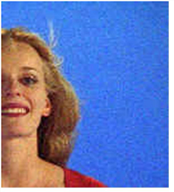
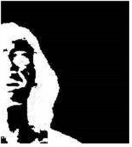

的 脱粒 当前景图像被胶片颗粒高度破坏时，使用工具。由于纹理的原因，当背衬屏幕噪音完全消除时，前景对象的边缘通常会变得粗糙和锯齿状，导致密钥不良。这些工具被创造出来，希望能在合成艺术家面对粒状图像时有所帮助。
的 脱粒类型 下拉菜单为您提供了一系列从 没有 到 大 。如果前面的图片有大量的片晶致像素噪声，你可能会失去一个好边的前景对象时清理所有的颗粒噪声的 清洁 BG 噪音 操作 模式。这些工具允许你在不影响钥匙质量的情况下清理谷物噪音。本节的结尾是一个简短的教程，解释何时以及如何使用这些工具。选择:
• 没有 -当 没有 选择后，您将获得采样的精确像素的颜色。这是默认模式。
• 小 -当 小 选择后，您将获得采样像素周围区域的小区域的平均颜色。当谷物非常浓密时，应该使用这个。
• 介质 -当 介质 选择后，您将获得采样像素周围区域的中等区域的平均颜色。这应该在谷物密度较低时使用。
• 大 -当 大 选择后，您将获得采样像素周围区域的较大区域的平均颜色。这应该在谷物非常松散的时候使用。
• 宽容 滑块-调整 宽容 滑块应该增加的效果 清洁 BG 噪音 工具，而不改变前景对象的边缘。
如果你有一个嘈杂的图像，就像下面的例子一样.

。..你会发现哑光也很吵:
您可以使用 清洁 BG 噪音 删除带噪像素的操作，但这也可以以负面的方式修改前景对象的边缘。
使用 脱粒 以下方式的工具可以帮助您清理图像，并在磨砂上获得良好的边缘:
| 1。 | 使用 清洁 BG 噪音 操作只是少量删除 alpha 通道视图中的一些白噪声，但确实使用它，以至于影响前景对象的边缘。 |
| 2. | 然后设置 脱粒类型 下拉菜单到 小 作为减少谷物的第一步: |

随着脱粒 宽容 滑块设置在 0 ,移动它周围的一些。这应该会增加 清洁 BG 噪音 工具，而不改变前景对象的边缘。
有时，这可能不足以完全去除颗粒，所以通过调整脱粒 宽容 滑块，你可以告诉 Primatte 算法你认为像素的亮度代表纹理。您应该尽量不要使用过高的值; 否则，它会影响整体的哑光。有关过度调整图像的示例，请参见下面。

Primatte degrain 算法使用离焦前景图像来计算噪声。
注意: 的 小 , 介质 和 大 脱粒工具的设置都会产生分别有较大或较小模糊的散焦前景。
注意: 重要的是要确保 作物 设置被正确应用; 否则，当产生离焦图像时，如果图像边缘有垃圾，则该垃圾会模糊到离焦前景中。
作为回顾:
| 1。 | 选择 选择 BG 颜色 操作 模式，并点击一个支持屏幕颜色。 |
| 2. | 选择 清洁 BG 噪音 操作 模式，并谨慎使用它，使其对前景对象边缘的影响最小。 |
| 3. | 如果在背衬屏幕区域仍有纹理，则使用 脱粒类型 功能从 小 设置以减少谷物。 |
| 4. | 如果谷物仍然存在，那么试着增加 宽容 滑一点 -- 不要太多。 |
| 5. | 如果谷物仍然是一个问题，那么试着改变 类型 到 介质 或 大 并改变谷物容限，直到达到预期的效果。 |
注意: 谷物功能并不总是完美地去除谷物，但有时有助于将其影响降至最低。
|
|